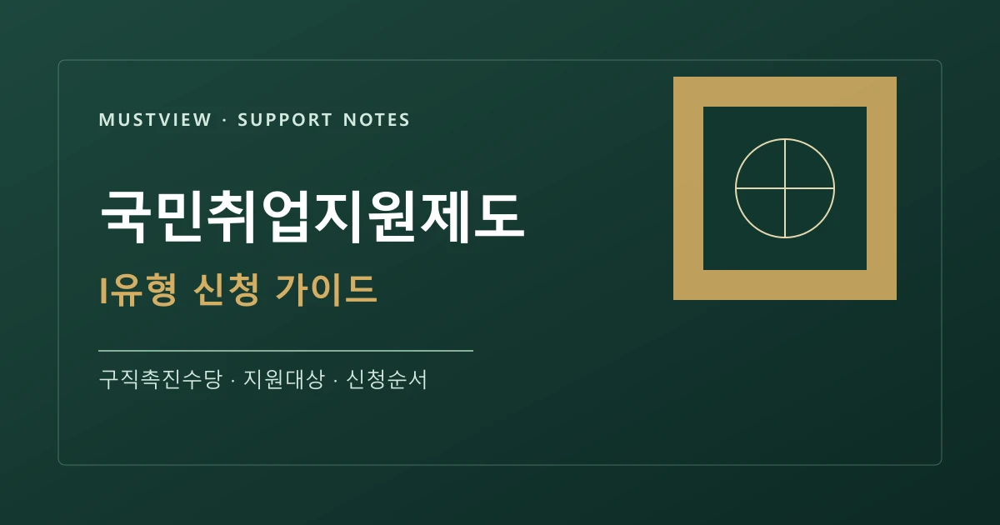
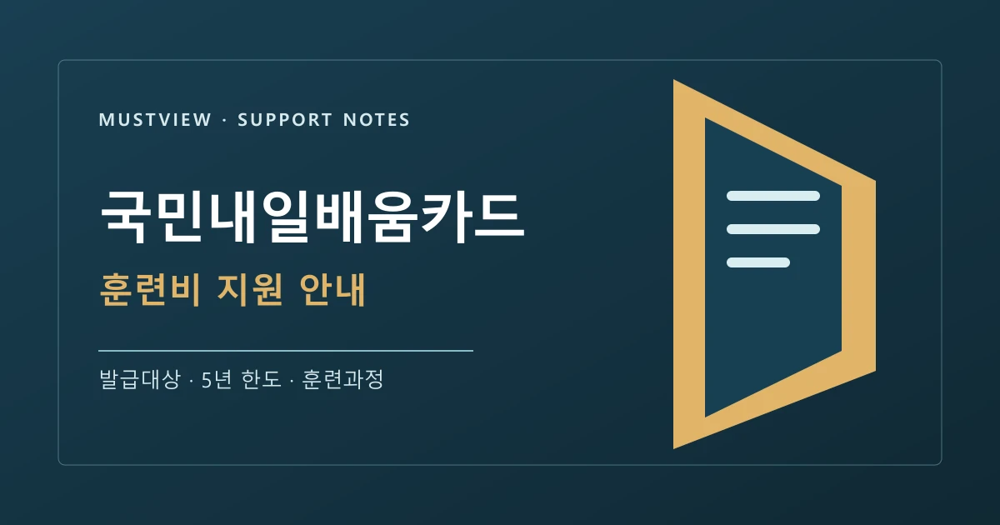
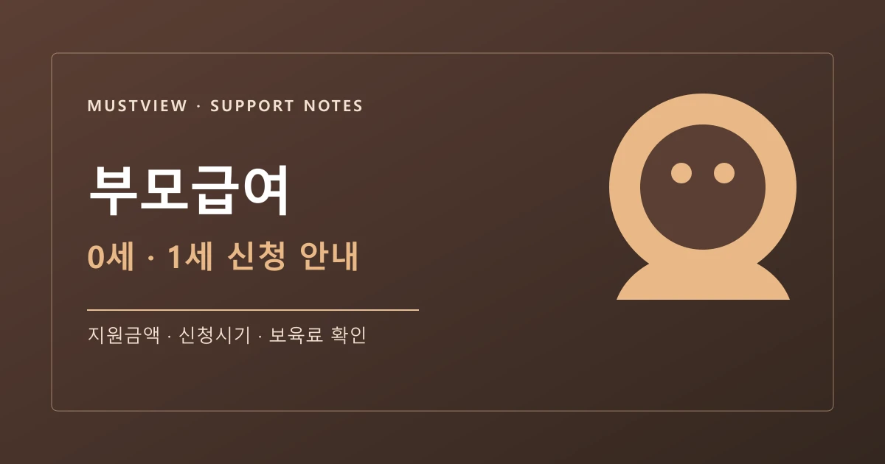
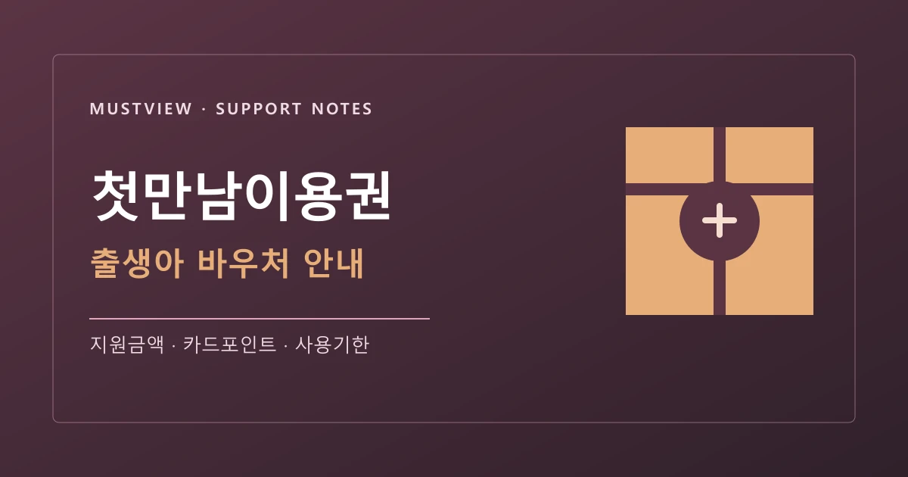
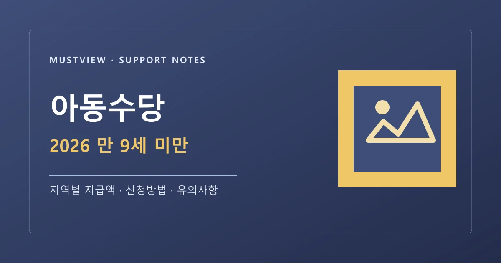

국민취업지원제도 I유형: 구직촉진수당과 신청 방법

소득·재산·취업경험 기준을 먼저 확인하고, 고용24 구직등록부터 신청서 제출까지 순서대로 살펴봅니다.
더보기카테고리 · 지원금
신청 전에 꼭 알아야 할 조건과 서류를 읽기 쉽게 정리했습니다. 모든 글은 정부기관 또는 공공기관의 공식 페이지를 연결하며, 최종 확인일을 함께 표시합니다.

소득·재산·취업경험 기준을 먼저 확인하고, 고용24 구직등록부터 신청서 제출까지 순서대로 살펴봅니다.
더보기
카드 발급 대상, 추가 지원 가능성, 훈련과정 선택과 본인부담금 확인 방법을 공식 안내 기준으로 정리했습니다.
더보기
출생 뒤 언제 신청해야 하는지, 어린이집 이용 시 무엇이 달라지는지, 온라인과 주민센터 신청을 함께 안내합니다.
더보기
국민행복카드 포인트로 받는 출생 지원 바우처의 대상, 신청 경로, 사용기한과 제한 업종을 확인합니다.
더보기
2026년 지급 연령 확대 내용을 기준으로 대상 아동, 신청 시점, 지급일과 주소지 주민센터 신청 방법을 정리합니다.
더보기